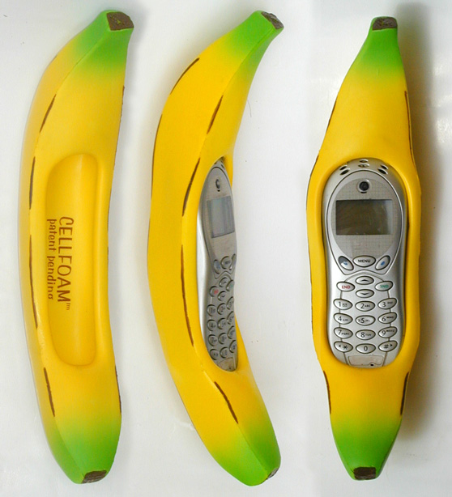

Bananaphone
It's a banana. It's a phone.
2
backers
$6
of $100
1000
days left

- Grows in bunches
- No baloney
- Ain’t a p(h)ony
- Cellular and bananular
- Real live mama and papa phone
- Brother and sister and a dogaphone
- Grandpa phone and a grammophone too
Just look at the things you don't need to use it:
- Don’t need quarters
- Don’t need dimes
- Don’t need computer
- Don’t need TV
You'll absolutely want to use it to call everyone, including:
- Call for pizza
- Call my cat
- Call the white house, have a chat!
If you are to place a call around the world, operator get you Beijing-jing-jing-jing!

FAQ
Of course, why it shouldn't be?
Boop-boo-ba-doo-ba-doop!